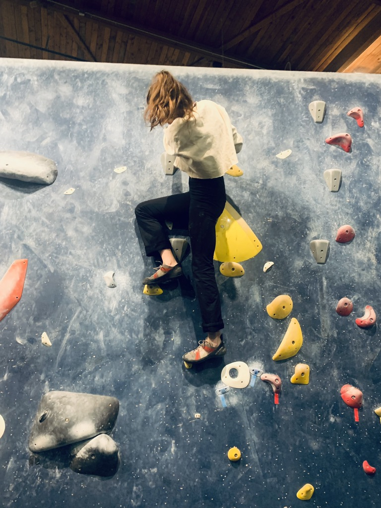

Keywords: Human factors in transportation, Road safety, Mixed-traffic driving environments, Human-automation interaction, Driving behavior, Pedestrian path-planning, Statistical modeling, Human subjects research
I am a human subjects researcher. I am interested in building human-like models to describe road user behavior in shared urban spaces. Specifically, my dissertation work explores cross-cultural representations of vulnerable road users in mixed-traffic driving environments, aiming to develop fair, safe, and shareable analytical representations of real-time negotiation between motorized and nonmotorized road users.
I’m a Ph.D. Candidate studying Transportation Systems in Civil & Urban Engineering at New York University’s Tandon School of Engineering in Downtown Brooklyn, NY. Some current project work:
Pedestrian exposure for crash prediction. Prediction models are only as good as the data they learn from.
Unregulated pedestrian behavior in mixed-traffic driving environments. Locale-specific feature learning is necessary training to ensure safe deployment around vulnerable road users. This project is jointly conducted at NYU and THI (Germany) to examine inter-cultural differences of pedestrian adherence to road regulation.
Water cooler coffee? 1,2 I’m best over a cup of joe. Please reach out to collaborate or discuss my research!
AFK grace
is learning to boulder …

but cannot wait for shavansana.
[1] Li, X., & Fussell, S. R. (2023, July). Negotiating Water Cooler Conversations Remotely: Perspectives from PhD Students During COVID-19. In International Conference on Human-Computer Interaction (pp. 142-154). Cham: Springer Nature Switzerland.
[2] Koch, T., & Denner, N. (2022). Informal communication in organizations: work time wasted at the water-cooler or crucial exchange among co-workers?. Corporate Communications: An International Journal, 27(3), 494-508.